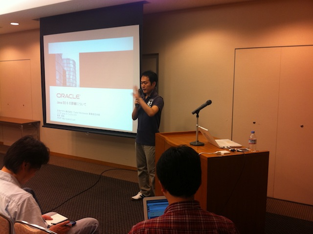

Java特集！ 第19回 -- オープンラボ岡山
- 終了しました。
?開催風景





?参加申し込み方法
http://kokucheese.com/event/index/12356/
?詳細
オープンラボ岡山 オープンラボ岡山とは、岡山周辺の技術者のための勉強会プラットフォームとして、 勉強会や読書会の場を提供するための組織です。勉強会や読書会を開催したい方、 参加したい方が簡単に集まることの出来る場にしたいと考えています。運営委員は 全員ボランティアで、それぞれが勉強会や読書会の主催者でもあります。興味のあ る方は是非とも一緒にやりましょう。 ■名称： 第19回 オープンラボ岡山 ■参加申し込み方法 -http://kokucheese.com/event/index/12356/ ■参加費： 1000円 ■開催日時： 2011年6月25日（土曜日） 14:00～18:00 ■開催場所： ホテル サンピーチ岡山 http://www.sunpeach.jp/ 〒700-0023 岡山市北区駅前町2丁目3番31号 ■主催: 岡山オープンソース技術研究会 オープンラボ岡山 実行委員会 ■共催： 岡山Javaユーザ会( http://java.okaya.ma/ ) 瀬戸内Linuxユーザ会（ http://www.stlug.org/ ) LinuxKernelHackJAPAN( http://hira-consulting.com/wiki ) オープンセミナー＠岡山実行委員会( http://openseminar.okaya.ma/ ) 日本PostgreSQLユーザ会 中国支部( http://www.postgresql.jp/ ) ■懇親会（任意）： Ryoutei 〒700-0026 岡山市北区奉還町2丁目5-23 http://www.233-3959.com/ryoutei/index.html 4000円程度を予定 ---------------------------------------------------------------------- 【タイトル】 もう Java EE 6 でいいんじゃない 【発表者名】 日本オラクル株式会社 シニア Java エバンジェリスト 寺田 佳央 (http://yoshio3.com) 【発表時間】 60分 【概要】 Java EE 6 は 2009年12月に正式リリースされ１年以上が経過しました。 J2EE 1.4 までは Java EE というと重量で実装が困難、開発効率が悪い などの悪いイメージがありましたが、Java EE はバージョン 5 より、 かんたん開発にシフトし、Java EE 6 では、その集大成ともいえる 実際に扱い易い軽量フレームワークへと生まれ変わりました。 既存の軽量フレームワークの長所を取り入れかんたんになった標準の Java EEを利用する事で、開発効率が向上するだけではなく、運用・管 理面でも大幅に負担を軽減します。もうフレームワークのバージョンと 使用するライブラリのバージョン依存問題、また開発環境と本番環境を あわせる努力ともおさらばです。本セッションでは Java EE 6 に含ま れる各種仕様をわかりやすく紹介します。 【タイトル】 昨日までは Tomcat 今日からは GlassFish 【発表者名】 日本オラクル株式会社 シニア Java エバンジェリスト 寺田 佳央 (http://yoshio3.com) 【発表時間】 60分 【概要】 Tomcat を未だに使っている方は今すぐ GlassFish をお使いください。 Tomcat は過去の参照実装で、今の Java EE の参照実装は GlassFish です。GlassFish は Java EE 6 に完全準拠し、Tomcat と同様非常に 軽量なため再起動時間も数秒、メモリ使用量も少なくとてもあつかい やすい軽量アプリケーションサーバです。 また、日本語化された GUI 管理インタフェースも兼ね備えるため、初 めて触る方も感覚的に操作できるようになっています。 GlassFish は待望の新バージョン v3.1 を 2011年2月28日にリリース しました。v3.0 から数多くのバグを修正し安定期を迎える GlassFish v3.1 は WebSocketへ対応する他、アプリケーションバージョニング、 自己増殖クラスタ機能が組み込まれています。 本セッションでは Tomcat に比べ運用・管理コストを大幅に削減する GlassFish v3.1 の新機能をわかりやすく紹介します。 【タイトル】 JBoss AS7 - 最新最速最軽量のJava EEアプリケーションサーバ 【発表者名】 Red Hat Senior Software Maintenance Engineer, JBoss 木村 貴由 / Takayoshi Kimura 【発表時間】 25分 【概要】 JBoss Application Serverの最新リリースであるAS7の概要、簡単な 利用方法、以前のJBoss ASとの違いやパフォーマンスについてご紹介 します。 【タイトル】 CDIを乗りこなせ！JBoss Seam 3とSeam Forge 【発表者名】 Red Hat Senior Software Maintenance Engineer, JBoss 木村 貴由 / Takayoshi Kimura 【発表時間】 25分 【概要】 Java EE 6では生産性を大きく向上させるキーとなる技術であるCDIが 採用されていますが、その具体的な利用方法がよくわからずにモヤモ ヤしている方も多いと思います。このセッションでは、CDIの拡張がど のように実現されているか、またCDIの拡張機構を利用して構築されて いるJBoss Seam 3フレームワーク、さらにSeam 3の強力なスタートポ イントの一つであるSeam Forgeをご紹介します。 【タイトル】 Infinispanで学ぶエンタープライズデータグリッド 【発表者名】 Red Hat Senior Software Maintenance Engineer, JBoss 木村 貴由 / Takayoshi Kimura 【発表時間】 25分 【概要】 高速データアクセス、大量データアクセスを実現するためにNoSQLと呼 ばれるカテゴリのソフトウェアの利用が進んでいます。JBossプロジェ クトの一つであるInfinispanもそのカテゴリのソフトウェアの一つで あり、古くから提供されていた分散キャッシュライブラリである JBoss Cacheが進化したソフトウェアです。このセッションでは Infinispanの概要やその機能、どのようなユースケースで威力を発揮 するのか、といったところをお話しします。
Copyright(C)2009 オープンラボ岡山運営委員会 All rights reserved.